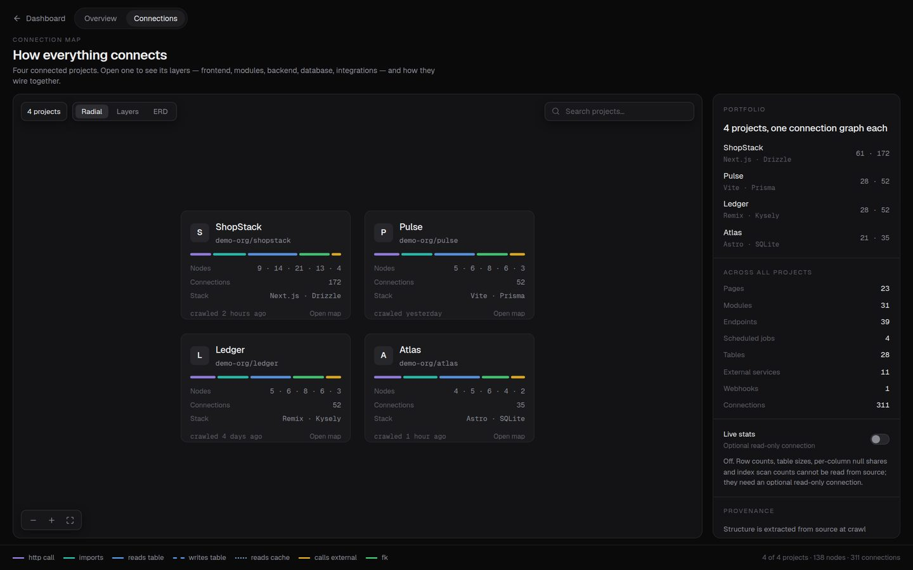

PLACEHOLDER decision
PLACEHOLDER — one or two sentences on why, not what.

Case study · 2026 · Data infrastructure
In brief
PLACEHOLDER — three or four sentences. Who has to read lineage and why, what breaks when a schema changes without them knowing, and what this system makes visible. Write the outcome here, not the process; the sections below are where that goes.
01 — Overview
PLACEHOLDER — what the brief was, and what the real problem underneath it turned out to be. Two short paragraphs beat one long one here.
PLACEHOLDER — the constraint that shaped everything after it: timeline, existing stack, someone else's brand guidelines, whatever it actually was.
02 — Research
PLACEHOLDER — who you interviewed (data engineers, analysts, platform owners), what their current workflow costs them, and what that changed about the design.
03 — Approach
PLACEHOLDER — how lineage is modelled, how a schema version is represented, what the graph does and does not try to show. One paragraph of intent, then the four notes below.
PLACEHOLDER — one or two sentences on why, not what.
PLACEHOLDER — one or two sentences on why, not what.
PLACEHOLDER — one or two sentences on why, not what.
PLACEHOLDER — one or two sentences on why, not what.
04 — The build
The connection map is embedded below as the real front end. Open a project to drop into its layers — frontend, modules, backend, database, integrations — then switch between the radial, layered and ERD readings of the same graph and watch which relationships each one makes obvious and which it hides.
PLACEHOLDER — replace with the paragraph that tells the reader what to look for. The three views are one dataset at three zoom levels; say which question each of them answers.
Runs entirely in your browser against fixture data; nothing here talks to a server. Built for a desktop viewport — open it full screen on a phone.
05 — Conclusion
PLACEHOLDER — the outcome in plain terms. If you have numbers, they go in the metrics row; if you don't, say what changed qualitatively rather than inventing a figure.
—
PLACEHOLDER metric
—
PLACEHOLDER metric
—
PLACEHOLDER metric
Template page. This case study is scaffolded and waiting on copy and artwork. Delete this box once the page is written.